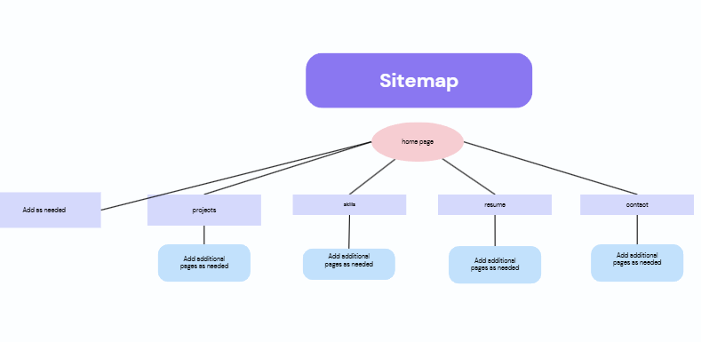

Purpose
I am a working software engineer, and this portfolio showcases my technical skills, project experience, and passion for building software. Its goal is to help me stand out to employers and secure my next role.
Target Audience
This site is designed for hiring managers and recruiters. They typically review many candidates quickly, so the site must be easy to navigate, clearly organized, and focused on evidence of my abilities.
Research Findings
I researched what employers look for and identified the following components my portfolio needs.
- A strong project showcase: According to Indeed, a leading job search platform, a portfolio of projects that demonstrates skills and experience is a key factor in landing a software engineering job. My Projects page will describe each project's purpose, technologies used, and my role, with links to the code and live demos.
- Evidence of problem-solving and a willingness to learn: Michigan State University's Career Network reports that hiring managers value strong problem-solving skills and candidates who are comfortable asking questions and researching answers. My project descriptions will explain the problems I faced and how I solved them.
- Clear contact information: A Contact page with my email, LinkedIn, and GitHub makes it easy for recruiters to reach me.
Site Map
